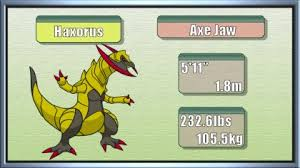

| Pokémon of the Week - May 21st 2017 | ||||
|---|---|---|---|---|
|  | ||||
| Overview | Haxorus is probably one of the best Pokemon brought to us by Generation 5. With an enormously high Attack stat and decent Speed, paired with excellent set up moves, Haxorus is quite the powerhouse and makes and can sweep teams pretty easily. However, Haxorus does have fairly frail Defenses, making it easier to revenge kill or do significant damage with a priority attack than many Pokemon. Haxorus also has problems with both types of hazards, not being weak to them but just being able to be hit by all of them. It also has a pretty basic typing, with not too many resistances, so can be easily damaged by quite a few common types. Haxorus does make up for this with a fairly large movepool, with many solid coverage moves that allow it to run a multitude of sets. Haxorus does fill its role quite well, being stronger than several Dragons and filling a mixture of roles. Also, don't forget the cool design. Never forget the cool design. | |||
| Positives |
+Base 147 attack is fantastic, meaning it can do some serious damage. +Base 110 HP gives it a bit of bulk, especially on the physical side where a decent base 80 defense backs it up. +It has amazing coverage, with Superpower and Earthquake. +It has access to great setup moves such as Swords Dance and Dragon Dance. +It is one of the best Wallbreakers in the game due to its sheer power. |
|||
| Negatives |
-Base 97 speed really lets it down. It’s too slow to sweep, and too fast to take advantage of gimmicks like Trick Room. -(76/90/70) defenses really leave it lacking sustainability when it can't kill -Dragon is pretty poor defensively. The overt prescence of fairy types leave it stuck being only average in the top tier meta |
|||
| Counters | Forretress is the hardest counter to Haxorus available; Gyro Ball 2HKOs Haxorus after a Dragon Dance while Forretress avoids the 2HKO from +1 Earthquake. Forretress will lose one-on-one to Swords Dance Haxorus, but it can Volt Switch out to a revenge killer while retaining about half of its health. Some good checks for Haxorus are Steel types like Skarmory, who can not only wall Haxorus but also phaze it out so it doesn't keep its boosts, as well as other defensive Steels like Forretress and Ferrothorn. Managing to damage it with a faster Pokemon after something has died often works, and many revenge killers with a Choice Scarf (Keldeo, Terrakion, etc.) can usually get the job done, as well as Pokemon that are naturally faster than it is. The only problem with these is they really can't switch in, as Haxorus can often decimate them, so you'll need to be careful. Residual damage is also a good way to deal with Haxorus, as wearing it down over time with status and hazards often can make it easy to revenge kill. Pokemon with priority like Breloom and Scizor also can do well, but once again they have to be concerned with getting hit by a boosted attack. | |||
| Click here for Further Information on haxorus | ||||